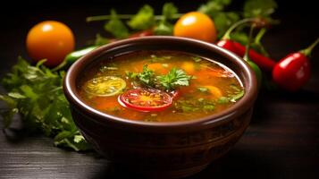

Home
Rasam

Description
Rasam is a classic South Indian soup-like dish known for its tangy, spicy, and aromatic flavors. Traditionally served as a side with rice, rasam is made with a base of tamarind or tomato, sometimes combined with cooked lentils, and seasoned with a blend of warming spices such as cumin, black pepper, mustard seeds, and curry leaves. Its thin, broth-like consistency and vibrant taste set it apart from other South Indian dishes like sambar, making it a staple in daily meals across the region.
The preparation of rasam is both simple and versatile, allowing for variations based on local ingredients and preferences. Besides its delicious flavor, rasam is valued for its digestive properties and is often recommended for soothing colds and aiding digestion due to the medicinal qualities of its spices. Whether enjoyed as a soup or mixed with rice, rasam remains a comforting and nourishing part of South Indian cuisine.
Ingredients
For Rasam Base:
- Tamarind – small lemon-sized ball (soaked in ½ cup warm water & juice extracted)
- Tomato – 1, chopped
- Cooked toor dal – ¼ cup (optional but adds body)
- Water – 3 to 4 cups
- Turmeric powder – ¼ tsp
- Salt – to taste
For Rasam Spice Mix:
- Rasam powder – 1 to 1.5 tsp (store-bought or homemade)
- Crushed garlic – 2–3 cloves (optional)
- Crushed pepper – ½ tsp
- Cumin seeds – ½ tsp
For Tempering:
- Ghee or oil – 1 tbsp
- Mustard seeds – 1 tsp
- Dried red chili – 1
- Curry leaves – 8–10
- Asafoetida (hing) – a pinch
Garnish:
- Fresh coriander leaves – chopped
Instructions
Step 1: Prepare Base
- In a pot, combine tamarind extract, tomato, turmeric, rasam powder, salt, crushed pepper, cumin, and garlic. Simmer for 5–7 minutes.
Step 2: Add Dal and Water
- Add cooked dal and water. Simmer until it begins to froth (don’t boil too long after frothing).
Step 3: Prepare Tempering
- Heat ghee/oil in a small pan, add mustard seeds. When they splutter, add red chili, curry leaves, and hing.
- Pour this over rasam.
Step 4: Garnish and Serve
- Add chopped coriander.
- Serve hot with rice or enjoy as a warm drink.